甲
MySQL 8
MySQL 8
乙
MySQL 5.7
MySQL 5.7
丙
没装数据库
没装数据库
项目相同，机器不同，结果对不上。
顺序是：先讲 Git，用 GitHub Desktop 克隆到本地并看懂本地仓库，再把项目跑起来。最后做随堂测验：在自己的仓库新建分支、提交、推送，并在网页上合并。绿字是要对照的结果。先选你的系统，后面的菜单和命令会跟着变。
这一节先不安装。Git 是管「代码的历史」的。GitHub Desktop 是它的窗口，不是另一种 Git。
项目文件会改很多遍。没有历史时，只能靠复制文件夹：项目-最终、项目-最终2、项目-真的最终。两个人同时改同一个文件，后来的人会把前面的人盖掉。看不出谁在什么时候改了哪一行。
Git 把每一次完成的修改记成一条提交。提交堆在一条分支上。远程仓库是放在网上的那一份，本地仓库是你电脑里的那一份。两边不会自动变成一样。Commit 先记在本地，Push 送到网上，网页上的合并再写进主分支，Pull 把这个结果拿回来。
Git 只记录文件的变化，不负责把 Java 跑起来。你在本地改文件、做提交，历史先存在自己电脑上。网上的仓库叫远程，这份课堂仓库的远程在 Gitee，不在 GitHub。GitHub Desktop 这个软件可以管理任何 Git 地址，所以用它来克隆 Gitee，不要求先注册 GitHub。
作业一要求有个人 Gitee。项目要先到本地，才能往下装 Docker、把系统跑起来。所以顺序是：先拿到课堂仓库，再跑项目，最后在自己的仓库上做一次网页合并。
窗口里的按钮两边一样。不一样的是安装，以及菜单栏在哪里。
第一次打开如果要求登录 GitHub，选择跳过。课堂仓库不在 GitHub 上，不登录也能克隆。
克隆就是把远程仓库完整抄到你的电脑，包括历史和分支。地址用 HTTPS，这个地址可以匿名读取，写讲义时确认过远程上有 main、备课、第一部分 三个分支。
https://gitee.com/dingsaier/warehouse-backend.git
warehouse-backend。main。点 Current Branch，选「第一部分」。History 里能看到已经有的提交。这就是本地仓库，文件已经在你刚选的文件夹里。下面的图是在 Mac 上打开 GitHub Desktop 3.6.6 后截的，红圈是要点的位置。Windows 上这些按钮的英文一样。差别只在菜单：Mac 在屏幕最上方，Windows 在软件窗口的顶上。
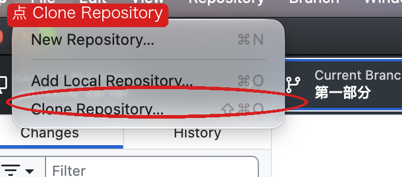
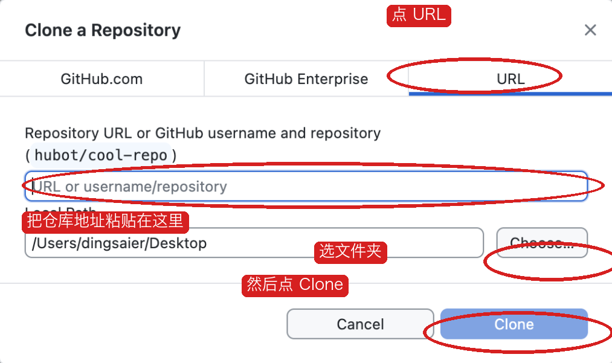
https://gitee.com/dingsaier/warehouse-backend.git。Local Path 选你自己的文件夹，图里的 Desktop 只是教师电脑上的例子。最后点 Clone。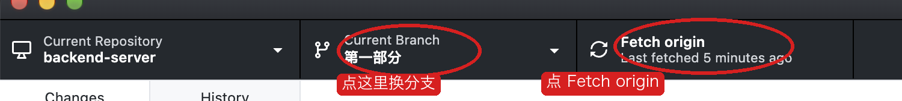
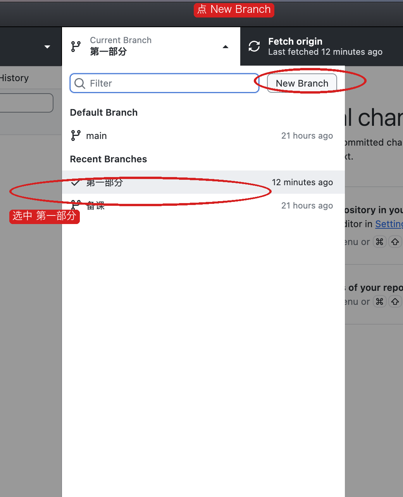
跑项目时 Current Branch 停在「第一部分」。新建分支、提交、推送和在网页上合并，是这堂课最后的随堂测验，用你自己的 Gitee 仓库做，不要在这个课堂仓库里做。
这一节不安装，也不敲命令。讲完再往下。
同一份 Java 项目，换一台电脑就可能跑不起来。甲的电脑装了 MySQL 8，乙的还是 5.7，丙的 3306 端口被别的软件占着，丁根本没装数据库。代码没变，环境变了。所以常听到一句靠不住的话：在我电脑上是好的。
后面这门课还要把同一份东西放到 Linux 服务器上。如果每个人本机的装法都不一样，服务器上又是第三种装法，出了错就分不清是程序写错了，还是这台机器和那台机器不一样。
项目相同，机器不同，结果对不上。
Windows、Mac、以后的 Linux，启动的是同一份环境。
Docker 把「程序」和「它要的环境」打在一起，然后在你的电脑里单独跑起来。你的 Windows 或 Mac 不用真的装一套 MySQL。你装的是 Docker。MySQL 跑在 Docker 里面，版本、端口、密码都写在一份文件里。
它不是一种编程语言，也不代替 Java。Java 还是我们写的。Docker 负责把 Java 要连的数据库，以及后面要加的 Redis、文件服务，用同一种办法启动。
作业一就要能用 Compose 把 MySQL 拉起来，并且能登录。第 16 周要把同一份 Compose 放到 Linux 上。中间还要加 Redis 和 MinIO。如果这周不先把 Docker 讲清楚，后面每加一个软件都要再教一遍「怎么在 Windows 上装、怎么在 Mac 上装」。
所以这周的顺序是：先知道它解决什么问题，再安装 Docker，再只用它启动 MySQL 和一个看数据库的网页。我们自己的 Java 程序，第二次课再放进去。
词是后起的名字。先记住它们各自指什么，安装的时候还会再见到。
mysql:8 和 adminer:4。可以把它想成安装包。docker-compose.dev.yml。浏览器地址栏里的 localhost 是你的电脑。MySQL 和看数据库的网页各自跑在一个容器里。网页如果要连数据库，却填写 localhost，它找的是自己那个容器，不是旁边的 MySQL。第一次课会亲手做一次这个错误。先看下面两行，知道差别在哪。
系统用页顶的 macOS / Windows 切换。装好之后，两边都要看到 Client 和 Server。
Docker.dmg。把 Docker 图标拖进「应用程序」文件夹。Terminal，打开「终端」。Docker Desktop 4.88 以前的安装窗口会问 Use recommended settings。出现的话选它，并输入开机密码。4.94 这一版打开后接受协议即可，不再要密码。
wsl --install，按提示重启，再继续安装 Docker。curl，那个不是同一个程序。docker version
docker version
Client 和 Server。这台 Mac 上 Server 那一段写着 Docker Desktop 4.94.0。你的版本号可以不同。只有 Client、没有 Server，就是 Docker Desktop 还没准备好，回到上一步等它启动完。docker version 的意思：问这台电脑，Docker 程序在不在，引擎有没有跑起来。Client 是你敲命令的这一端，Server 是真正跑容器的那一端。缺 Server 就先把 Docker Desktop 打开。
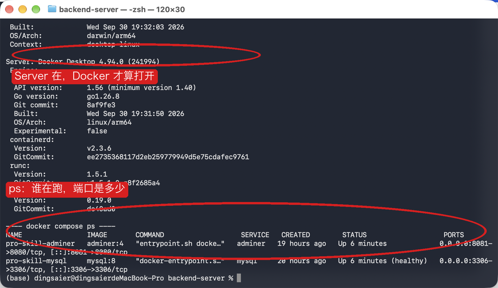
先不要管应用。仓库根目录里要能看到 docker-compose.dev.yml 和 pom.xml。下面的命令都在这个目录执行。
cd 你的仓库路径
ls（Mac）或 dir（Windows）时，列表里有 docker-compose.dev.yml。用编辑器打开 docker-compose.dev.yml。今天只看 mysql 和 adminer。下面的 app 第二次课再看。
| 文件里的字 | 讲的时候说什么 |
|---|---|
image: mysql:8 | 用 MySQL 8 这个镜像 |
container_name: pro-skill-mysql | 容器的名字 |
"3306:3306" | 冒号左边是你电脑的端口，右边是容器里面的端口 |
"8081:8080" | Adminer 在容器里是 8080，浏览器要开 8081 |
MYSQL_ROOT_PASSWORD: root | 数据库密码 |
MYSQL_DATABASE: pro_skill | 自动建这个库 |
ADMINER_DEFAULT_SERVER: mysql | 默认要连的主机名，是服务名 mysql |
volumes | 表存在数据卷里，容器停了数据还在 |
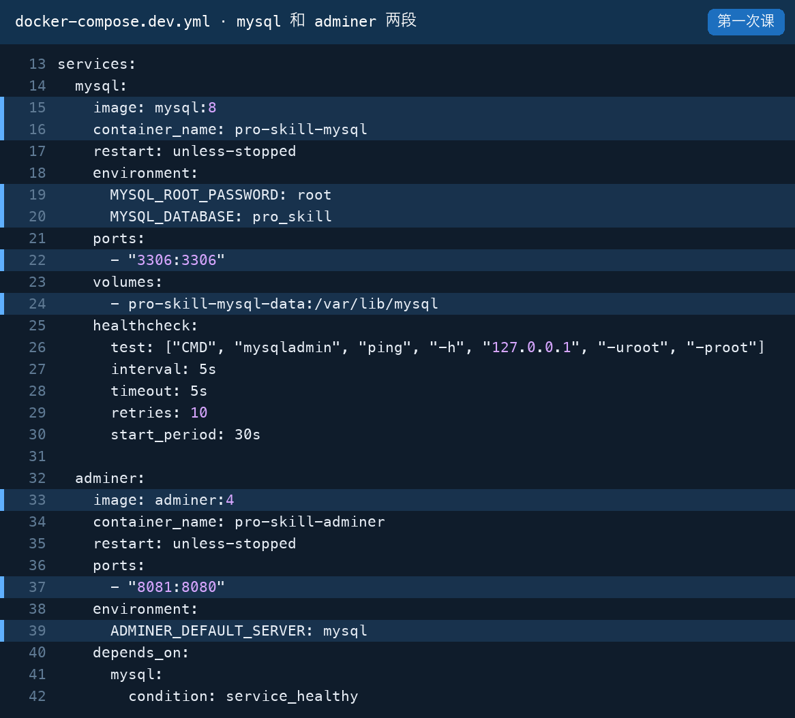
mysql:8，第 16 行容器名。第 19–20 行密码 root、自动建库 pro_skill。第 22 行端口 3306。第 24 行数据卷，表存在这里。第 25–30 行健康检查，ps 里的 healthy 就是它通过了。第 33 行镜像 adminer:4，第 37 行浏览器开 8081，第 39 行登录页默认的服务器是 mysql。第 40–42 行等 MySQL 健康以后才启动 Adminer。docker compose -f docker-compose.dev.yml up -d mysql adminer
docker compose：按一份清单，把好几个容器一起管起来。-f docker-compose.dev.yml：用仓库里的这一份清单，不自己猜文件名。up：没有的容器就创建，然后启动。-d：放到后台跑。命令结束后容器还在，终端可以继续敲下一条。mysql adminer：清单里还有应用，这里只启动这两个。第一次课先不要带上 app。第一次会下载镜像。屏幕停在 Downloading 或 Pulling 时不要关窗口。这台电脑上镜像本来就有，所以很快结束。你们第一次要等它下完。
docker compose -f docker-compose.dev.yml ps
ps 的意思：列出这一份清单里的容器现在怎么样。healthy 是健康检查通过了。0.0.0.0:8081->8080 的意思：你电脑的 8081 端口，转进容器里面的 8080。
pro-skill-mysql 的状态里有 healthy，pro-skill-adminer 的状态是 Up。如果 MySQL 还是 health: starting，等十几秒再执行一次 ps。列表里如果已经有 pro-skill-app，先执行 docker compose -f docker-compose.dev.yml stop app。第一次课不用它。stop 是停下，不删除数据。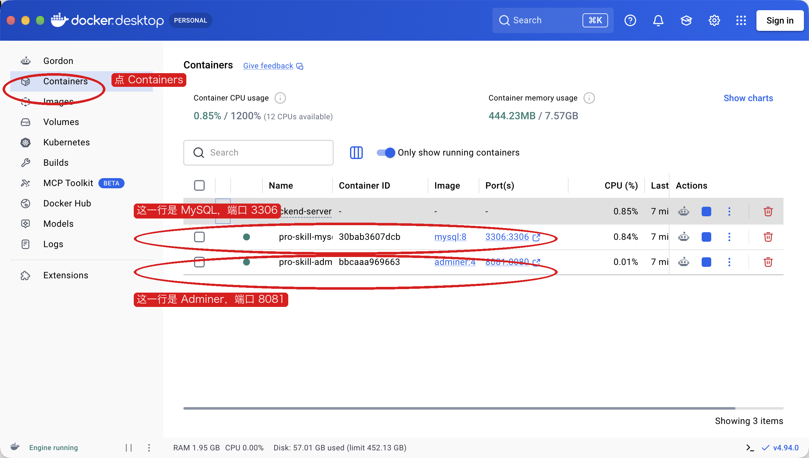
浏览器打开 http://localhost:8081。页面是中文时，格子名是：系统、服务器、用户名、密码、数据库。服务器一栏可能已经写着 mysql，那是文件里的默认值。先把它改成 localhost。
点「登录」。
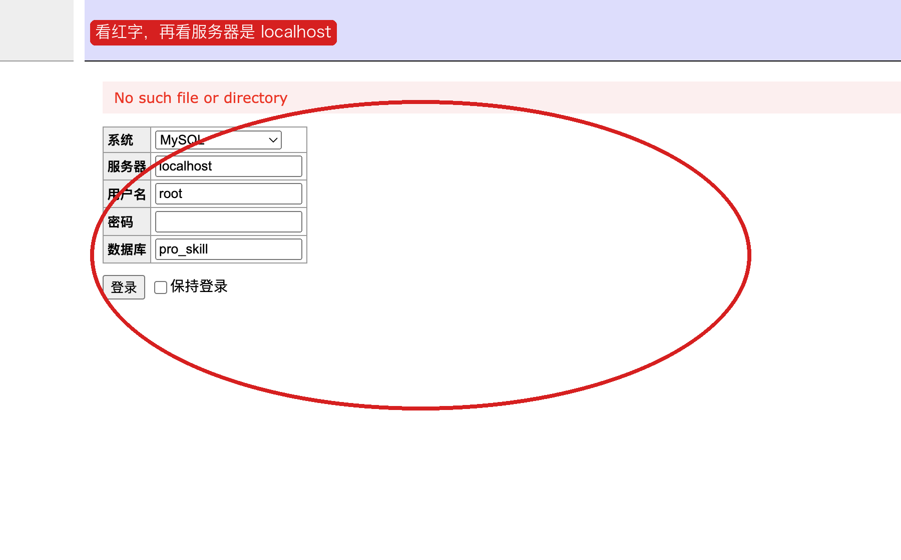
这行红字是这台电脑上实际点出来的。MySQL 容器当时仍是 healthy。失败只出在服务器这一格：Adminer 在自己的容器里，localhost 指的是它自己。
服务器改成 mysql，其他四格不变，再登录。
flyway_schema_history、tb_user（大约 4 行）、warehouse（大约 3 行）、warehouse_location（大约 3 行）、warehouse_zone（大约 2 行）。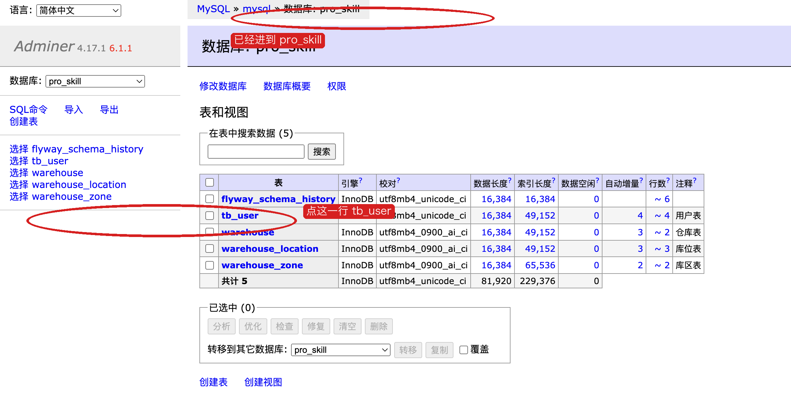
点 tb_user。如果先进去的是表结构，再点上面的「选择数据」。
admin，显示名称是系统管理员，角色是 ADMIN。另外还有 wh_manager、operator、business。再把服务器改回 localhost，又出现那行红字。改回 mysql，又能看见表。
浏览器地址栏的 localhost:8081 是对的，那是网页从容器映射到你的电脑。页面里要填的数据库主机，是容器之间的名字 mysql。这两个 localhost 不是同一个地方。
docker compose -f docker-compose.dev.yml stop docker compose -f docker-compose.dev.yml start
mysql 登录，tb_user 里的 admin 还在。数据在数据卷里，不在被停掉的那个容器里面。这次课不要执行 docker compose down -v。-v 会把数据卷删掉。
先确认 MySQL 和 Adminer 还在。不在就执行 start。
docker compose -f docker-compose.dev.yml ps
build: . 表示用当前目录的 Dockerfile，把我们的程序打成镜像。container_name 是 pro-skill-app。端口是 8080:8080。环境变量 APP_LESSON_DATASOURCE_HOST 是程序去连数据库时用的主机名。没另外设置时，这个值是 mysql，和周一 Adminer 改对的服务器名一样。
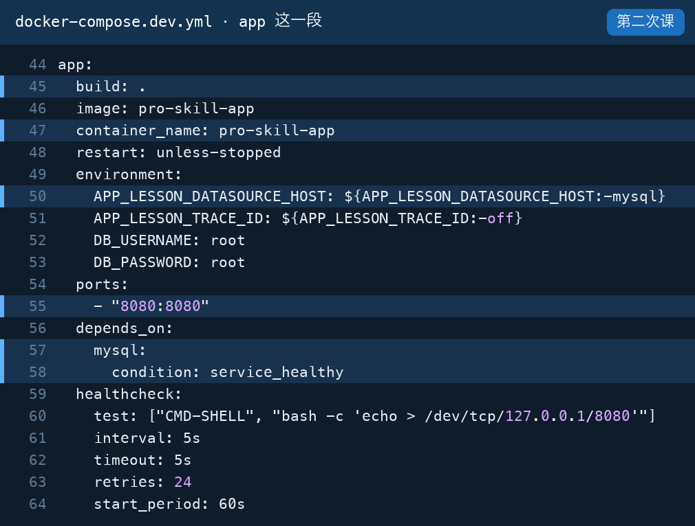
build: .：用仓库根目录的 Dockerfile 做镜像。第 47 行容器名 pro-skill-app。第 50 行数据库主机，没另外设置时是 mysql。第 51 行是后面课程用的开关，这节保持 off。第 55 行端口 8080。第 57–58 行等 MySQL 健康再启动。第 59–64 行健康检查，ps 里应用变成 healthy 就是它通过了。仓库里还有 docker-compose.localhost.yml，会把这个值改回 localhost。那是周一已经复现过的错，这节课不用它。第 15 周排错时再叠上去。
Compose 的 app 段里没有 ./mvnw spring-boot:run。容器每次启动，只执行 Dockerfile 最后一行：java -jar app.jar。编译发生在做镜像的时候，不发生在每次启动的时候。
打开项目根目录的 Dockerfile。它分成两段，中间用第二个 FROM 切开。
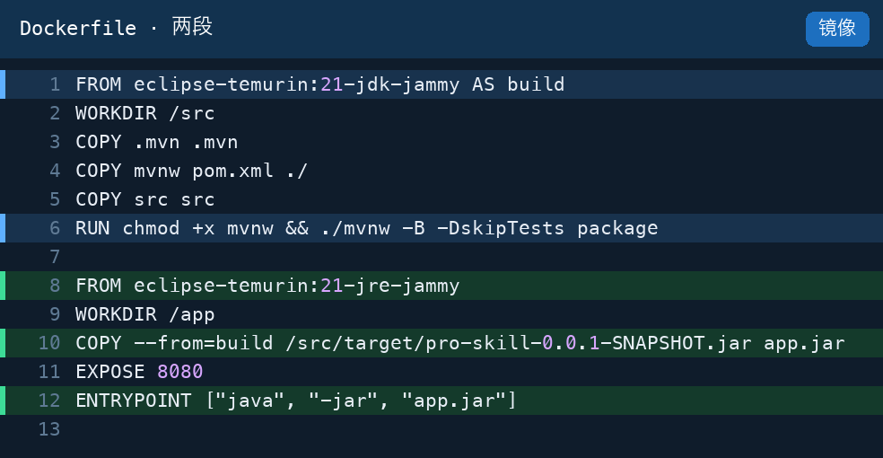
AS build 用带编译器的 JDK。它把源码拷进镜像，在镜像里面执行 ./mvnw package，得到 jar。学生电脑上不用先装 Maven，也不用自己跑这条命令。app.jar。编译器用过就丢掉，运行时的镜像里没有源码，也没有 Maven。ENTRYPOINT 是容器每次启动时执行的命令。所以 Compose 里看不到 mvnw，也看不到 java。它们写在这里。--build 才会重做镜像。源码没改时，后面的 up 不用再带 --build。docker compose -f docker-compose.dev.yml up -d --build app
--build：按 Dockerfile 把我们的程序打成镜像。第一次大约要几分钟。app：只动应用这一个，MySQL 和 Adminer 继续跑。第一次会构建镜像。这台 Mac 上这一步大约五分钟，屏幕长时间停在 Downloading 是正常的。等到命令自己结束，再看状态。等十几秒，直到 ps 里应用是 healthy。这台电脑上构建结束后大约十秒。
docker compose -f docker-compose.dev.yml ps
curl 是从这台电脑发一次网页请求。-s 是少打印进度，只看结果。Windows 要写成 curl.exe，因为 PowerShell 里单独的 curl 是另一个命令。
curl -s http://localhost:8080/actuator/health
curl.exe -s http://localhost:8080/actuator/health
"status":"UP"。这台电脑上完整内容是 {"groups":["liveness","readiness"],"status":"UP"}。这里的 localhost:8080 是你的浏览器，走的是端口映射。应用在容器里面连数据库用的是服务名 mysql，和周一 Adminer 填对的那个名字一样。curl -s -X POST http://localhost:8080/auth/login \
-H 'Content-Type: application/json' \
-d '{"username":"admin","password":"Admin@123"}'
curl.exe -s -X POST http://localhost:8080/auth/login -H "Content-Type: application/json" -d "{\"username\":\"admin\",\"password\":\"Admin@123\"}"
token，username 是 admin，role 是 ADMIN。页面怎么点，留到第 11 周周一。地址是 http://localhost:8080/swagger-ui.html。日志里如果看到空的 []，这节不用管。那是请求编号还没打开。第 15 周周三（第六部分）排错时再讲它是什么、解决什么、代码写在哪。
教师先按下面做完一遍，学生看，先不要跟着点。看完后，每人用自己的 Gitee 账号再做一遍。课堂仓库 warehouse-backend 只能克隆，不能推送，这次不要用它。
做完的样子：你自己的仓库里有一条新分支，上面有一个写着你名字的文件。网页上有一条已经合并的 Pull Request。目标分支里能打开这个文件。
浏览器打开 gitee.com，登录。右上角「+」，点「新建仓库」。
lesson-practice。路径会跟着变成这个名字。这一步的意思：网上先有一份仓库。Push 和 Pull Request 都是对着这份仓库做的。勾选 Readme，是为了先有一条主分支。仓库页左上角写着 master 就是 master，写着 main 就是 main。记下这个名字。
点「克隆/下载」，复制 HTTPS 地址。样子是 https://gitee.com/你的个性地址/lesson-practice.git。个性地址在网址里，不是页面上的昵称。
推送时 Gitee 不收网页登录密码。头像，设置，安全设置，私人令牌，生成新令牌。描述写「课堂测验」，勾选 projects。生成后立刻复制，这个页面关掉就再也看不到。
这一步的意思：令牌是给 GitHub Desktop 用的推送凭证。用户名填个性地址，密码框粘贴令牌。
GitHub Desktop 里，菜单 File，Clone Repository，点 URL。粘贴刚才的 HTTPS 地址。Local Path 选一个新文件夹，不要选已经克隆的 warehouse-backend。点 Clone。
这一步的意思：把网上那份抄到电脑。课堂仓库继续用来跑项目。这个新仓库只用来交测验。
master 或 main，和网页左上角一致。History 里有一条初始化 Readme 的提交。点 Current Branch，点 New Branch。名字写 practice-你的学号。基于当前这条主分支创建。
这一步的意思：新分支是一条独立的修改线。文件先改在这条线上，主分支先不动。合并发生在后面的网页上，不要点 Branch 菜单里的 Merge。
在这个新仓库的文件夹里新建 我的练习.txt，里面写你的名字。回到 GitHub Desktop，左侧 Changes 里出现这个文件。勾上它。Summary 写「记下我的名字」。点 Commit。
这一步的意思：Commit 只写进你电脑上的这条分支。网页上还没有这个文件。
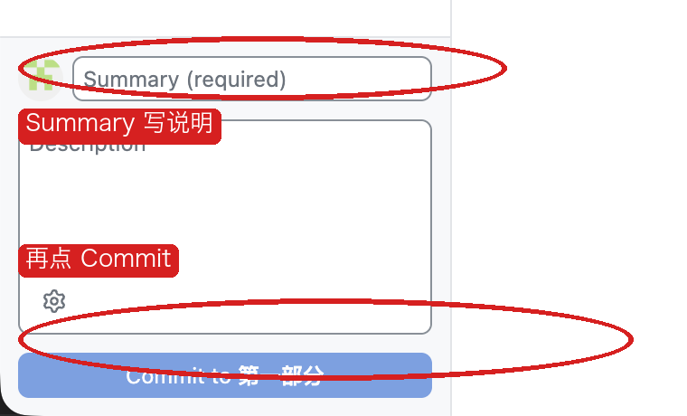
上方按钮写着 Publish branch 或 Push origin 时，点它。第一次会问账号。用户名填 Gitee 个性地址，密码框粘贴私人令牌，不是网页登录密码。
这一步的意思：Push 把本地有、网上还没有的提交送到你的仓库。Publish branch 是这条分支第一次上线，网上会因此多出 practice-你的学号。不要点 Force push。
practice-你的学号。点进去能看到 我的练习.txt。主分支上还没有这个文件。仓库页点「Pull Requests」，再点「新建 Pull Request」。源分支选 practice-你的学号，目标分支选第 1 步记下的 master 或 main。标题写「记下我的名字」。点「创建」。
这一步的意思：Pull Request 是一张合并申请，请仓库把源分支上的提交并进目标分支。创建它不会自动改主分支。你是这个仓库的管理员，所以申请人和合并的人可以是你自己。
我的练习.txt 是新增文件。主分支此时仍然没有这个文件。就在这个 Pull Request 页面，点「合并」，再按页面上的确认。不要回到 GitHub Desktop 里找 Merge。
这一步的意思：合并是网页把那条分支上的提交接进主分支。点完之后，主分支和练习分支都有这个文件。
我的练习.txt，里面是你的名字。把这个页面留着，给教师看。回到 GitHub Desktop。Current Branch 选主分支（master 或 main）。上方如果变成 Pull origin，点它。
这一步的意思：网页上的合并发生在网上。Pull 是把网上主分支的新提交拿进你电脑。不点的话，本地主分支里仍然没有 我的练习.txt。
我的练习.txt。History 里能看到刚才那次网页合并。docker version 有 Client 和 Servermysql 能看见 tb_user 里的 admin"status":"UP"，账号 admin / Admin@123 能登录java -jar app.jar 启动localhost 不是旁边那个容器「你应该看到」里的红字、表、健康检查和登录结果，是 2026-10-09 在 macOS、Docker Desktop 4.94 上按这个顺序跑出来的。Windows 的安装点击来自 Docker 官方安装页。装好之后，除了讲义里单独写出的 PowerShell 命令，其余命令相同。